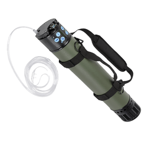
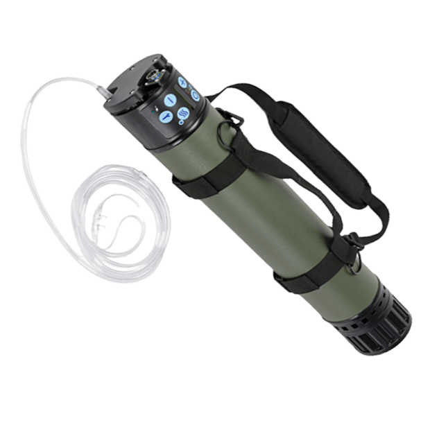
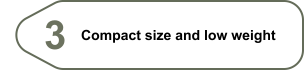

-

- 
It's time that kills them, but it's oxygen that saves them.
SAROS 3000 — Field Oxygen Delivery System for the Severely Wounded
SAROS 3000 is a portable oxygen supply system, which can significantly increase the survivability of the Ukrainian military who are fighting the Russian occupation troops right now.
The SAROS 3000 unit is compact in size and low in weight, allowing it to be carried on the back without much difficulty, and the usefulness of this system on the battlefield is hard to overestimate.
In terms of functionality, the SAROS 3000 is almost identical to an oxygen cylinder, but is safer, easier to transport and more technologically advanced. Whereas the oxygen cylinder stores compressed oxygen, the SAROS 3000 allows you to pump oxygen directly from the environment. This reduces the explosion hazard of the design and allows it to be used much longer, not to mention the fact that the classic oxygen cylinder is much heavier.